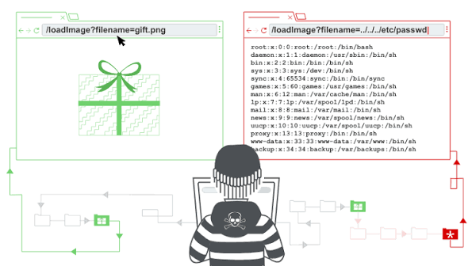

ROAD TO HALL OF FAME
"Ruta de Progreso: Laboratorios de Seguridad"
1

LAB 08 FILE PATH TRAVERSAL
Descripción: Esta práctica demuestra la explotación de una vulnerabilidad de File Path Traversal. El fallo de seguridad ocurre porque la aplicación web no sanitiza correctamente las entradas del usuario al cargar recursos locales..
2

Nombre del Lab 2
Descripción: Análisis de puertos y descubrimiento de servicios.
Evidencia: Reporte de Nmap.
3

Nombre del Lab 3
Descripción: Intercepción de tráfico local y análisis de paquetes.
Evidencia: Archivo .pcap de Wireshark.